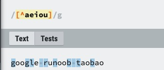
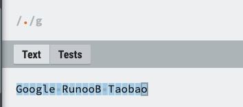
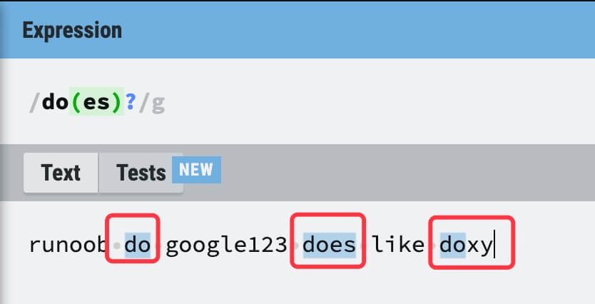
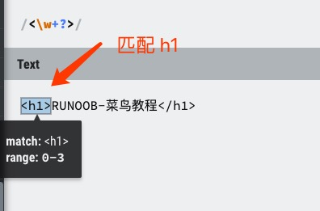
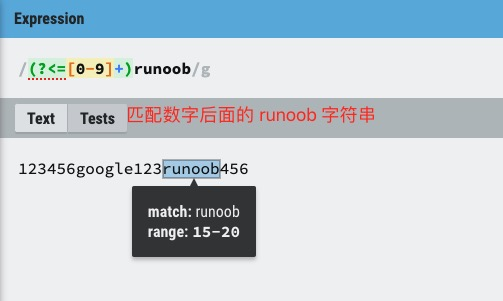
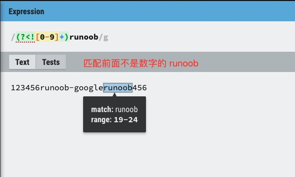

Expresión regular -Sintaxis
Las expresiones regulares son una herramienta potente para hacer coincidir y manipular texto. Están formadas por caracteres ordinarios y caracteres especiales (llamados "metacaracteres") que se usan para describir el patrón de texto que se desea buscar.
Las expresiones regulares pueden buscar, reemplazar, extraer y validar patrones específicos en un texto.
Por ejemplo:
runoo+b, puede hacer coincidirrunoob、runooob、runoooooobetc.,+El signo indica que el carácter anterior debe aparecer al menos una vez (una o más veces).Pruébalo »。
runoo*b, puede hacer coincidirrunob、runoob、runoooooobetc.,*El signo indica que el carácter anterior puede no aparecer, o aparecer una o más veces (0, 1 o más veces).Pruébalo »。
colou?rpuede hacer coincidircolorocolour，?El signo de interrogación indica que el carácter anterior puede aparecer como máximo una vez (0 o 1 vez).Pruébalo »。
El método para construir expresiones regulares es igual que el de crear expresiones matemáticas: se pueden combinar expresiones pequeñas con diversos metacaracteres y operadores para crear expresiones más grandes. Los componentes de una expresión regular pueden ser un solo carácter, un conjunto de caracteres, un rango de caracteres, una selección entre caracteres o cualquier combinación de todos estos componentes.
La expresión regular actúa como una plantilla que hace coincidir un patrón de caracteres con la cadena de texto buscada.
Caracteres ordinarios
Los caracteres ordinarios incluyen todos los caracteres imprimibles y no imprimibles que no están designados explícitamente como metacaracteres, incluyendo todas las letras mayúsculas y minúsculas, todos los dígitos, todos los signos de puntuación y algunos otros símbolos.
| Carácter | Descripción | Ejemplo |
|---|---|---|
| [ABC] | Coincide con[...]todos los caracteres enumerados en . Por ejemplo[aeiou]coincide con todas las letras e, o, u, a en la cadena "google runoob taobao". 
|
Pruébalo » |
| [^ABC] | coincide con todos los caracteres excepto[...]los caracteres en . Por ejemplo[^aeiou]coincide con todos los caracteres de la cadena "google runoob taobao" excepto las letras e, o, u, a.  |
Pruébalo » |
| [A-Z] | [A-Z] representa un rango y coincide con todas las letras mayúsculas; [a-z] coincide con todas las minúsculas; [0-9] coincide con todos los dígitos. 
|
Pruébalo » |
| . | Coincide con cualquier carácter individual excepto los saltos de línea (\n, \r); equivale a [^\n\r].  |
Pruébalo » |
| [\s\S] | Coincide con todos los caracteres (incluidos los saltos de línea).\scoincide con todos los caracteres de espacio en blanco (incluidos los saltos de línea),\Scoincide con todos los caracteres que no son espacios en blanco (sin incluir saltos de línea); combinando ambos se puede hacer coincidir cualquier carácter. 
|
Pruébalo » |
| \w | Coincide con letras, dígitos y guiones bajos; equivale a [A-Za-z0-9_]. 
|
Pruébalo » |
| \d | Coincide con cualquier dígito arábigo (0 a 9); equivale a[0-9]。 
|
Pruébalo » |
Herramienta de prueba
Modificadores:
[0-9]+
Texto a buscar:
123abc456edf789
Caracteres no imprimibles
Los caracteres no imprimibles también pueden ser parte de una expresión regular. La siguiente tabla enumera las secuencias de escape que representan caracteres no imprimibles:
| Carácter | Descripción |
|---|---|
| \cx | Coincide con el carácter de control indicado por x. Por ejemplo, \cM coincide con un Control-M o un retorno de carro. El valor de x debe ser una de las letras A-Z o a-z; de lo contrario, se trata a c como un carácter 'c' literal. |
| \f | Coincide con un avance de página; equivale a \x0c y \cL. |
| \n | Coincide con un salto de línea; equivale a \x0a y \cJ. |
| \r | Coincide con un retorno de carro; equivale a \x0d y \cM. |
| \s | Coincide con cualquier carácter de espacio en blanco, incluidos espacios, tabulaciones, avances de página, etc.; equivale a [ \f\n\r\t\v]. Ten en cuenta que las expresiones regulares Unicode también hacen coincidir el espacio de ancho completo. |
| \S | Coincide con cualquier carácter que no sea espacio en blanco; equivale a [^ \f\n\r\t\v]. |
| \t | Coincide con un tabulador; equivale a \x09 y \cI. |
| \v | Coincide con un tabulador vertical; equivale a \x0b y \cK. |
Caracteres especiales
Los llamados caracteres especiales son aquellos que tienen un significado especial, como se mencionó anteriormenterunoo*ben*, que significa "cualquier número de caracteres". Si se desea buscar en una cadena el*símbolo en sí, es necesario escapar*escaparlo, es decir, añadir una barra invertida delante de\, esto es:runo\*obcoincide con la cadenaruno*ob。
Muchos metacaracteres requieren un tratamiento especial al intentar hacerlos coincidir. Para coincidir con estos caracteres especiales, primero se debe "escapar" el carácter, es decir, colocar una barra invertida\delante de ellos. La siguiente tabla enumera los caracteres especiales en las expresiones regulares:
| Carácter especial | Descripción |
|---|---|
| $ | Coincide con la posición final de la cadena de entrada. Si se establece la propiedad Multiline del objeto RegExp, $ también coincide con '\n' o '\r'. Para coincidir con el propio carácter $, use \$. |
| ( ) | Marca el inicio y el final de una subexpresión. La subexpresión puede capturarse para usarse más adelante. Para coincidir con estos caracteres, use \( y \). |
| * | Coincide con la subexpresión anterior cero o más veces. Para coincidir con el propio carácter *, use \*. |
| + | Coincide con la subexpresión anterior una o más veces. Para coincidir con el propio carácter +, use \+. |
| . | Coincide con cualquier carácter individual excepto el salto de línea \n. Para coincidir con el propio ., use \. |
| [ | Marca el inicio de una expresión de corchetes. Para coincidir con [, use \[. |
| ? | Coincide con la subexpresión anterior cero o una vez, o indica un cuantificador no codicioso. Para coincidir con el propio carácter ?, use \?. |
| \ | Marca el siguiente carácter como carácter especial, literal, retroreferencia o escape octal. Por ejemplo, 'n' coincide con el carácter 'n', '\n' coincide con un salto de línea, '\\' coincide con "\", '\(' coincide con "(". |
| ^ | Coincide con la posición inicial de la cadena de entrada. Cuando se usa dentro de una expresión de corchetes, indica que no se acepta el conjunto de caracteres dentro de los corchetes (negación). Para coincidir con el propio carácter ^, use \^. |
| { | Marca el inicio de una expresión de cuantificador. Para coincidir con {, use \{. |
| | | Indica una selección entre dos elementos. Para coincidir con |, use \|. |
Cuantificadores
Los cuantificadores se usan para especificar cuántas veces debe aparecer un componente dado de una expresión regular para cumplir la coincidencia. En total hay*、+、?、{n}、{n,}、{n,m}6 tipos.
| Carácter | Descripción | Ejemplo |
|---|---|---|
| * | Coincide con la subexpresión anterior cero o más veces. Por ejemplo,zo*puede coincidir con"z"y"zoo"。*equivale a{0,}。 | Pruébalo » |
| + | Coincide con la subexpresión anterior una o más veces. Por ejemplo,zo+puede coincidir con"zo"y"zoo", pero no puede coincidir con"z"。+equivale a{1,}。 | Pruébalo » |
| ? | Coincide con la subexpresión anterior cero o una vez. Por ejemplo,do(es)?puede coincidir con"do" 和 "does", pero no puede coincidir con"dog"。?equivale a{0,1}。  |
Pruébalo » |
| {n} | n es un entero no negativo; coincide exactamente n veces. Por ejemplo,o{2}no puede coincidir con"Bob"la o en , pero sí puede coincidir con"food"las dos o en . | Pruébalo » |
| {n,} | n es un entero no negativo; coincide al menos n veces. Por ejemplo,o{2,}no puede coincidir con"Bob"la o en , pero puede coincidir con"foooood"todas las o en .o{1,}equivale ao+，o{0,}equivale ao*。 | Pruébalo » |
| {n,m} | m y n son enteros no negativos, con n <= m. Coincide como mínimo n veces y como máximo m veces. Por ejemplo,o{1,3}coincidirá con"fooooood"las tres primeras o en .o{0,1}equivale ao?. Nota: no debe haber espacios entre la coma y los dos números. | Pruébalo » |
La siguiente expresión regular coincide con un entero positivo,[1-9]establece que el primer dígito no sea 0,[0-9]*indica cualquier cantidad de dígitos:
/[1-9][0-9]*/

Ten en cuenta que el cuantificador aparece después de la expresión de rango, por lo que se aplica a toda la expresión de rango, que en este caso solo especifica los dígitos del 0 al 9 (incluidos 0 y 9).
Aquí no se usa el cuantificador + porque no es necesario que haya un dígito en la segunda posición o en posiciones posteriores. Tampoco se usa el carácter ? porque usarlo limitaría el entero a solo dos dígitos.
Si desea hacer coincidir números de dos dígitos del 0 al 99, puede usar la siguiente expresión para especificar al menos un dígito y como máximo dos dígitos:
/[0-9]{1,2}/
La expresión anterior tiene un defecto: solo puede coincidir con números de hasta dos dígitos y coincidirá con valores inesperados como 0 y 00. Después de mejorarla, la expresión para coincidir con enteros positivos del 1 al 99 es la siguiente:
/[1-9][0-9]?/
或
/[1-9][0-9]{0,1}/
* 和 +Los cuantificadores son codiciosos porque intentan coincidir con tanto texto como sea posible. Agregue un?después de ellos para lograr una coincidencia no codiciosa o mínima.
Por ejemplo, es posible que busque en un documento HTML el contenido dentro de la etiqueta h1. El código HTML es el siguiente:
<h1>RUNOOB-菜鸟教程</h1>
Codicioso:La siguiente expresión coincide con todo el contenido desde el signo menor que (<) hasta el signo mayor que (>) que cierra la etiqueta h1:
/<.*>/

No codicioso:Si solo necesita coincidir con las etiquetas h1 de apertura y cierre, la siguiente expresión no codiciosa solo coincide con <h1>:
/<.*?>/

También puede usar la siguiente expresión regular para coincidir con la etiqueta h1:
/<\w+?>/

Al colocar*、+ 或 ?después del cuantificador?, la expresión cambia de "codiciosa" a "no codiciosa" (coincidencia mínima).
Anclas de posición
Las anclas le permiten fijar la expresión regular al principio o al final de una línea, y también pueden describir la posición de los límites de una palabra.
^ 和 $Se refieren respectivamente al inicio y al final de la cadena,\bdescribe el límite anterior o posterior de una palabra,\Bindica un límite que no es de palabra.
| Carácter | Descripción | Ejemplo |
|---|---|---|
| ^ | Coincide con la posición al comienzo de la cadena de entrada. Si se establece la propiedad Multiline del objeto RegExp, ^ también coincidirá con la posición después de \n o \r. | Pruébelo » |
| $ | Coincide con la posición al final de la cadena de entrada. Si se establece la propiedad Multiline del objeto RegExp, $ también coincidirá con la posición antes de \n o \r. | Pruébelo » |
| \b | Coincide con un límite de palabra, es decir, la posición entre una palabra y un espacio. | Pruébelo » |
| \B | Coincide con un límite que no es de palabra, es decir, una posición que no está al principio ni al final de una palabra. | Pruébelo » |
Nota:No se pueden usar cuantificadores junto con anclas. Dado que no puede haber más de una posición inmediatamente antes o después de un salto de línea o límite de palabra, no se permiten expresiones tales como^*de este tipo.
Para coincidir con el texto al comienzo de una línea de texto, use^el carácter al inicio de la expresión regular. Tenga cuidado de no confundir^este uso con el uso de negación dentro de una expresión de corchetes.
Para coincidir con el final de una línea de texto, use$el carácter al final de la expresión regular.
Para usar anclas al buscar títulos de capítulos, la siguiente expresión regular coincide con un título de capítulo que contiene solo dos dígitos finales y aparece al comienzo de la línea:
/^Chapter [1-9][0-9]{0,1}/
Un verdadero título de capítulo no solo aparece al comienzo de la línea, sino que también es el único texto en esa línea. La siguiente expresión, al fijar tanto el inicio como el final de la línea, garantiza que la coincidencia especificada solo coincida con el título del capítulo y no con referencias cruzadas:
/^Chapter [1-9][0-9]{0,1}$/
Los límites de palabra pueden controlar con precisión el alcance de la coincidencia. La siguiente expresión coincide con los primeros tres caracteres de la palabra Chapter, porque estos tres caracteres aparecen después de un límite de palabra:
/\bCha/
\bLa posición de es muy importante: cuando se encuentra al inicio de la cadena, busca coincidencias al comienzo de la palabra; cuando se encuentra al final de la cadena, busca coincidencias al final de la palabra. Por ejemplo, la siguiente expresión coincide con la cadena ter en la palabra Chapter, porque aparece antes de un límite de palabra:
/ter\b/
La siguiente expresión coincide con la cadena apt en Chapter, pero no coincide con apt en aptitude:
/\Bapt/
La cadena apt aparece en una posición que no es límite de palabra en Chapter, pero aparece en un límite de palabra en aptitude. Para\Bel operador de no límite de palabra, no se puede coincidir con el principio o el final de una palabra, por lo que la siguiente expresión no coincide con Cha en Chapter:
/\BCha/
Selección
Use paréntesis()para encerrar todas las opciones, y separe las opciones adyacentes con|.
()indica un grupo de captura,()guarda el valor coincidente de cada grupo; se pueden consultar múltiples valores coincidentes mediante el número n (n es un número que indica el contenido del enésimo grupo de captura).


Usar paréntesis produce un efecto secundario: el contenido de la coincidencia relacionada se almacena en caché (se captura). Si no se necesita capturar, se puede usar?:antes de la primera opción para eliminar este efecto secundario; en este caso, los paréntesis solo se usan para agrupar y no guardan el contenido coincidente.
Donde?:es uno de los metacaracteres de no captura; los otros dos metacaracteres de no captura son?= 和 ?!: el primero es un lookahead positivo, que coincide con la cadena de búsqueda en cualquier posición donde comience a coincidir con el patrón de expresión regular dentro de los paréntesis; el segundo es un lookahead negativo, que coincide con la cadena de búsqueda en cualquier posición donde no comience a coincidir con ese patrón de expresión regular.
Diferencias de uso de ?=, ?<=, ?!, ?<!
exp1(?=exp2): busca exp1 delante de exp2 (lookahead positivo).

(?<=exp2)exp1: busca exp1 detrás de exp2 (lookbehind positivo).

exp1(?!exp2): busca exp1 que no esté seguida de exp2 (lookahead negativo).

(?<!exp2)exp1: busca exp1 que no esté precedida de exp2 (lookbehind negativo).

Para más información, consulte:Aserciones de anticipación (lookahead) y de retroceso (lookbehind) en expresiones regulares
Retroreferencias
Agregar paréntesis a ambos lados de un patrón de expresión regular o parte de él hará que la coincidencia relacionada se almacene en un búfer temporal. Cada subcoincidencia capturada se almacena en el orden en que aparece de izquierda a derecha en el patrón de expresión regular; la numeración de los búferes comienza en 1 y se pueden almacenar hasta 99 subexpresiones capturadas. Cada búfer puede ser accedido usando\n, donde n es un número decimal de uno o dos dígitos que identifica un búfer específico.
Puede usar el metacarácter de no captura?:、?= 或 ?!para reescribir la captura e ignorar el guardado de la coincidencia relacionada.
Una de las aplicaciones más simples y útiles de las retroreferencias es buscar dos palabras idénticas adyacentes en un texto. Tomemos como ejemplo la siguiente oración:
Is is the cost of of gasoline going up up?
La oración anterior tiene varias palabras repetidas. La siguiente expresión regular usa una única subexpresión para localizar estas repeticiones:
Ejemplo
Buscar palabras repetidas:
var patt1 = /\b([a-z]+) \1\b/igm;
document.write(str.match(patt1));
Pruébelo »
Expresión capturada[a-z]+coincide con una o más letras. La segunda parte de la expresión regular\1es una retroreferencia a la primera subcoincidencia (el contenido capturado entre paréntesis), es decir, requiere que le siga inmediatamente una palabra idéntica a la primera.
El metacarácter de límite de palabra\bgarantiza que solo se detecten palabras completas; de lo contrario, frases como "is issued" o "this is" no se reconocerían correctamente.
La marca al final de la expresióng(global) especifica que la expresión se aplique a todas las coincidencias encontradas en la cadena de entrada;i(ignorar mayúsculas y minúsculas) especifica que no se distinga entre mayúsculas y minúsculas;m(multilínea) especifica que puede haber coincidencias potenciales a ambos lados de los saltos de línea.
Las retroreferencias también pueden descomponer una URI en sus componentes. Supongamos que desea descomponer la siguiente URI en protocolo (ftp, http, etc.), dirección de dominio y ruta:
https://www.runoob.com:80/html/html-tutorial.html
La siguiente expresión regular proporciona esta funcionalidad:
Ejemplo
Muestra todos los datos coincidentes:
var patt1 = /(\w+):\/\/([^/:]+)(:\d*)?([^# ]*)/;
arr = str.match(patt1);
for (var i = 0; i < arr.length; i++) {
document.write(arr[i]);
document.write("<br>");
}
Pruébelo »
str.match(patt1)Devuelve una matriz que contiene 5 elementos: el índice 0 corresponde a toda la cadena coincidente, los índices 1 a 4 corresponden a cada grupo de captura entre paréntesis, y así sucesivamente.
- La primera subexpresión entre paréntesis（\w+): captura la parte del protocolo de la dirección web, coincidiendo con cualquier palabra delante de los dos puntos y las dos barras inclinadas. Resultado:https
- La segunda subexpresión entre paréntesis（[^/:]+): captura la parte de la dirección de dominio, coincidiendo con uno o más caracteres que no sean : ni /. Resultado:www.runoob.com
- La tercera subexpresión entre paréntesis（:\d*): captura el número de puerto (si lo hay), coincidiendo con cero o más dígitos después de los dos puntos. Resultado::80
- La cuarta subexpresión entre paréntesis（[^# ]*): captura la ruta y la información de la página, coincidiendo con cualquier secuencia de caracteres que no incluya # ni espacios. Resultado:/html/html-tutorial.html
run
hdr***11@gmail.com
.Un carácter especial dentro de una expresión de corchetes, como[.]solo coincidirá con el carácter., equivalente a\., en lugar de coincidir con todos los caracteres excepto\nel carácter de nueva línea.
Pruébelo »
run
hdr***11@gmail.com
lookwolf
185***26532@163.com
^ 和 [^指定字符串]La diferencia entre:
^se refiere a la posición donde comienza la cadena
[^指定字符串]se refiere a cualquier otra cadena excepto la cadena especificada
lookwolf
185***26532@163.com
lovely
873***207@qq.com
Dirección de referencia
Expresión regular para horas y minutos
Expresión regular para coincidir con el formato de hora xx:xx (por ejemplo: 18:26):
lovely
873***207@qq.com
Dirección de referencia
JUSTABANANA
529***425@qq.com
Dirección de referencia
Usar la regex anterior dará como resultado:Cat In The Hat
Si reemplazas el interior+por*, como:
entonces la salida será:CatInTheHat
La razón es:*indica que el carácter de la izquierda aparece 0 o más veces, de modo que la regex puede coincidir con los\b+espacios+\by reemplazarlos por \b. Es decir, elimina los\b+espacios. Equivale a quitar los espacios y fusionar 2 límites de palabra en 1.
JUSTABANANA
529***425@qq.com
Dirección de referencia
zppet
zpp***sina.com
Dirección de referencia
En cuanto a las referencias inversas, en re cada paréntesis corresponde a un índice de referencia; si la condición dentro de un paréntesis no coincide, el valor de retorno correspondiente es undefined.
Por ejemplo, modifiquemos la dirección de prueba del curso:
var str = "https://www.runoob.com/try/try.php?filename=tryjsref_regexp4"; var patt1 = /(\w+):\/\/([^/:]+)(:\d*)?([^# ]*)/; arr = str.match(patt1); for (var i = 0; i < arr.length ; i++) { document.write(arr[i]); document.write("<br>"); }Ejecute la página de prueba y obtenga los siguientes resultados:
zppet
zpp***sina.com
Dirección de referencia
lbstudying
224***3229@qq.com
En las notas anteriores, sobrela expresión regular de horas y minutoshay un error
------------------------------------------------------
Expresión regular de horas y minutos
La expresión regular para coincidir con el formato de hora xx:xx (por ejemplo: 18:26):
------------------------------------------------------
Aquí no se consideró que el rango de visualización de la hora es 00~23 y el de los minutos es 00~59.
La expresión correcta es:
También se puede reemplazar \d por [0-9]
Texto de prueba:
lbstudying
224***3229@qq.com